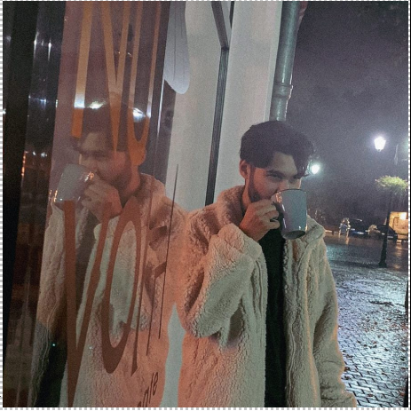

Date de indentificare
Nume-prenume: Perseca Andrei-Cosmin

Email: andrei_perseca@yahoo.com
Radacinile educatiei sunt amare, dar fructul este dulce.
MATERIE
AN
LINK
Programarea calculatoarelor si limbaje de programare
I
Fisa disciplina
Informatica aplicata
I
Fisa disciplina
Componente si circuite pasive
I
Fisa disciplina
Pasiuni/Hobby-uri
Dansul
Editare foto/video